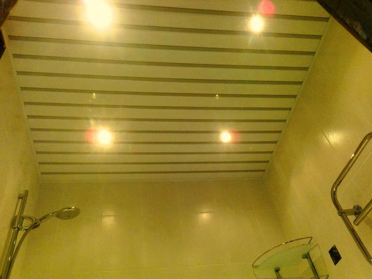

Качественный электромонтаж в Санкт-Петербурге и ленобласти, стаж 12 лет. Частный электрик, недорого и качественно.
Тел. 8 904 642 08 57 Николай.
Николай.

Сделать электрическую проводку в ванной комнате.
Цены ниже!
Статья расскажет об основных правилах монтажа электрической проводки в ванной комнате.
Правильный монтаж электрической проводки в ванной комнате чрезвычайно важен, вед повышенная влажность воздуха в этом помещении таит особую угрозу для людей, и если во время сооружения сети будут допущены ошибки, то это может провести к самым печальным последствиям.
Перед непосредственно процедурой монтажа необходимо четко спланировать расположение всех осветительных приборов и бытовой техники, которую Вы будете использовать, для того, чтобы подвести к ним провода. Стоит учесть то, что если Вы будете использовать приборы с большой мощностью (бойлер, стиральная машина), то к ним нужно подвести провода с большим сечением. Проводку нужно проложить еще до тех пор, пока начнутся отделочные работы, что позволит скрыть ее из интерьера под керамической плиткой, что является очень важным критерием с точки зрения эстетичности ванной комнаты.
Сколько стоит сделать электрику в ванной.
|
Площадь пола в ванной, кВ. м. |
Цена за электромонтаж в руб. |
|
2, 5 |
5 000 |
|
3 |
6 000 |
|
4 |
7 000 |
|
5 |
8 000 |
|
6 |
9 000 |

Особое внимание стоит обратить на расположение розеток.
Даже если они имеют достаточный уровень защиты от влаги и комплектуются защитными крышками, все равно лучше всего расположить их таким образом, чтобы возможность попадания воды на них была минимальной. Это станет дополнительной защитой от поражения электрическим током. Также необходимо правильно подобрать и сами розетки: показатель их защиты должен составлять не менее IP65, а произведены они должны быть только из качественных материалов.
Также повышенные качественные критерии нужно применить при выборе электрических проводов. Все дело в том, что если, например, изоляция кабеля будет некачественной, и он перегорит под керамической плиткой, то, в лучшем случае, Вы просто не сможете пользоваться одной из розеток или выключателей.
После прокладки электрических проводов по штробам необходимо начертить план их расположения.
Это позволит в будущем, когда Вам нужно будет проделать отверстие в плитке для монтажа мебели или какого-либо вида техники, не повредить провода дрелью или перфоратором.
Правильный и качественный монтаж электрической проводки позволит не только обеспечить надежность сети, но и обеспечит полную безопасность. Поэтому если Вы не уверены в своих силах, то такую работу лучше доверить профессионалам.

Сколько будут стоить материалы.
Замена электропроводки в панельном доме.
Расценки на электропроводку квартир.
Сколько стоит замена электропроводки в двухкомнатной квартире?.
Сколько стоит проложить проводку в 3 ком квартире?
Сколько стоит проложить проводку в четырехкомнатной квартире?
Сколько стоит сделать внутреннюю проводку?.